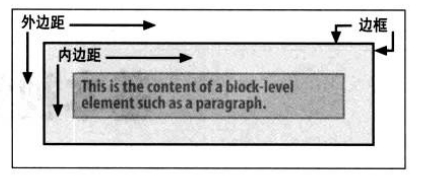
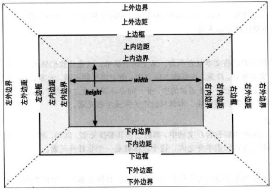
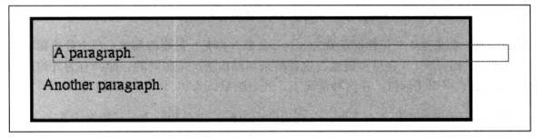
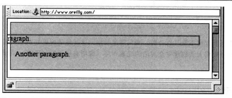
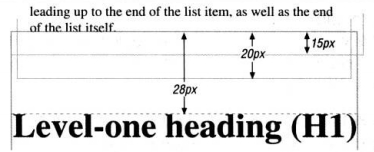
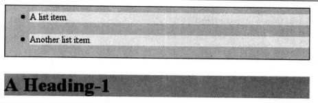
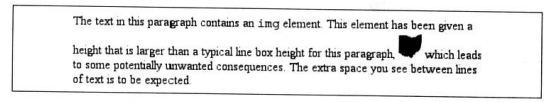

基本视觉格式化
基本框
元素框
CSS 假定诶个元素都会生成一个或多个矩形框，这称为元素框。
各元素框中心有一个内容区(content area)，这个内容区周围有 可选的内边距、边框和外边距（因为宽度可设置为 0）。

内容区的背景（某种颜色和平铺图像）都会延伸到内边距，不能是负值。
外边距是透明的，可以是负值。
边框如果没有设置颜色，就显示元素内文本的颜色。
包含块
包含块是由最近的块级祖先框、表单元格或行内块祖先框的内容边界（content edge）构成。
行内元素额摆放方式不直接依赖于包含块。
非替换元素
元素的内容包含在文档中。
替换元素
作为其他内容占位符的一个元素。例如 <img>
块级元素

水平格式化
width 影响的是内容区的宽度。
width margin-left margin-right 可以设置为 auto
使用 auto
如果这三个属性都设置为非 auto 的某个值（overconstrained），此时 margin-right 强制设置为 auto，使元素的总宽度等于其包含块的 width。
如果两个外边距显式设置，而 width 设置为 auto，width 将自动设置为所需的某个值，达到父元素的内容宽度。
width 设置定宽，两个外边距都设置为 auto，它们会设置为相等的长度，元素就会在其父元素居中。
负外边距
7 个水平属性的总和要等于父元素的 width。
右负外边距
1 | .parent { |

1 | 10px + 0 + 0 + 440px + 0 + 0 - 50px = 400px |
1 | .parent { |
当元素水平属性过分受限时，即使 margin-right 指定了另外一个值，也会要求重置 margin-right，此时 margin-right 为 -110px
1 | 10px + 0 + 0 + 500px + 0 + 0 - 110px = 400px |
左负外边距
如果左负外边距为负，不仅段落会超出 div 的边框，还会超出浏览器窗口本身的边界！

百分数
width 、padding、margin 都可以设置为百分数，参照物是父元素；border 不能设置为百分数，只能是长度。
替换元素
width 为 auto，元素的宽度则是内容的固有宽度。
如果一个替换元素的 width 不同于其固有宽度，那么 height 值也会成比例变化，除非 height 自己也显式设置为一个特定的值。
垂直格式化
一个元素的默认高度由其内容决定。
如果设置的高度小于显示内容所需要的高度，浏览器会提供某种方法来查看所有内容，而不是增加元素框的高度；用户代理的具体行为取决于 overflow 属性的值。
如果将一个元素的上、下外边距设置为 auto，实际上它们都会重置为 0，使元素没有外边距。
百分数高度
如果一个块级正常流元素的 height 设置为一个百分数，则参照物是父元素的 height
如果没有显式声明父元素的 height，百分数高度会重置为 auto。
auto 高度
如果块级正常流元素的高度设置为 auto，其默认高度正好包裹所有子元素。
合并垂直外边距
如果相邻有多个外边距，也会出现合并。
1 | ul { margin-bottom: 15px; } |

如果在父元素上设置边框或内边距，会使其子元素的外边距包含着父元素内。
这样的话，就只会在 ul 和 h1 之间发生外边距合并。

负外边距
如果两个垂直负外边距合并，浏览器会选取两个外边距绝对值最大的值。
如果一个正外边距和一个负外边距合并，选取的值就是 正外边距 - 负外边距的绝对值
行内元素
基本术语和概念
匿名文本（anonymous text）
所有未包含在行内元素中的字符串，空格也算。
字符框（character box）
也称为 em 框，font-size 确定各字符框的高度，实际字形可能比其字符框更高或更矮。
内容区
对于非替换元素，所有字符框串在一起构成的框。
对于替换元素，内容区就是元素的固有高度加上可能有的 padding、border、margin 的值。
行间距（leading）font-size值 和 line-height值之差。
行内框
对于非替换元素，行内框高度刚好等于 line-height 的值；
对于替换元素，行内框刚好等于内容区的高度，因为 line-height 影响不到替换元素。
行框
它的高度刚好包含该行中出现的最高的行内框，和最低点的最小框。
行内替换元素
行内替换元素只是会让行框额高度刚好能包含替换元素，而不会改变行高。

替换元素于基线
默认地，行内替换元素位于基线上。